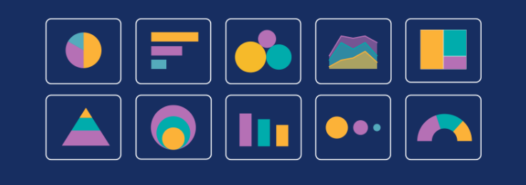

Visualising Data
This module covers the fundamentals of data visualisation, including its grammar, idioms, and presentation techniques to aid decision-making. It explores resources, tools, and programming languages for visualisation, addressing current and future challenges in the field. Upon completion, students will be able to critically apply data visualisation principles, evaluate various tools for different datasets, and implement key techniques using realistic data. The module also focuses on effective communication of complex information through appropriate visualisation tools, enhancing students' ability to present data-driven insights and support informed decision-making across different disciplines.